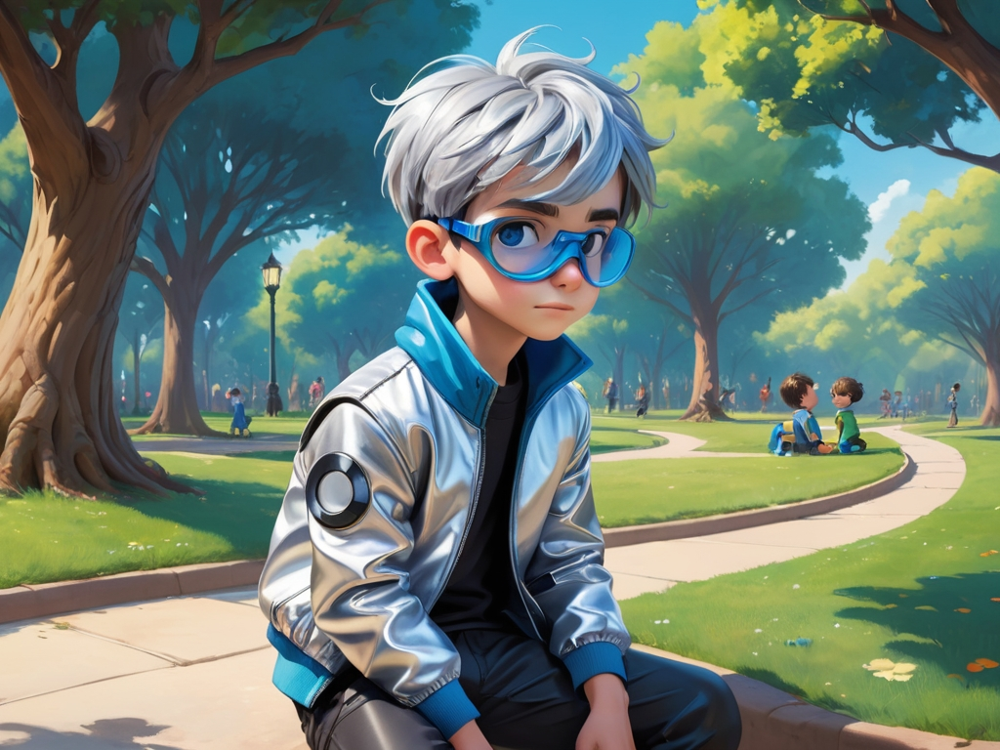
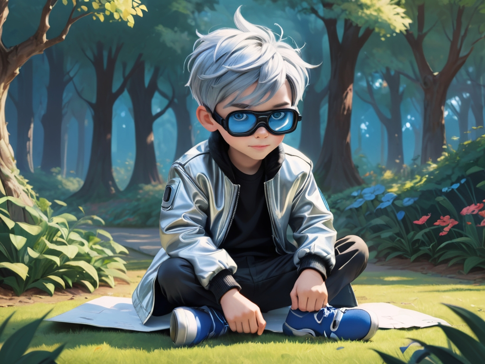
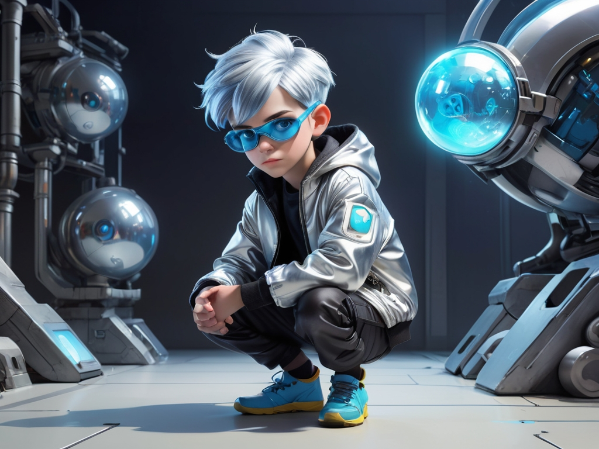
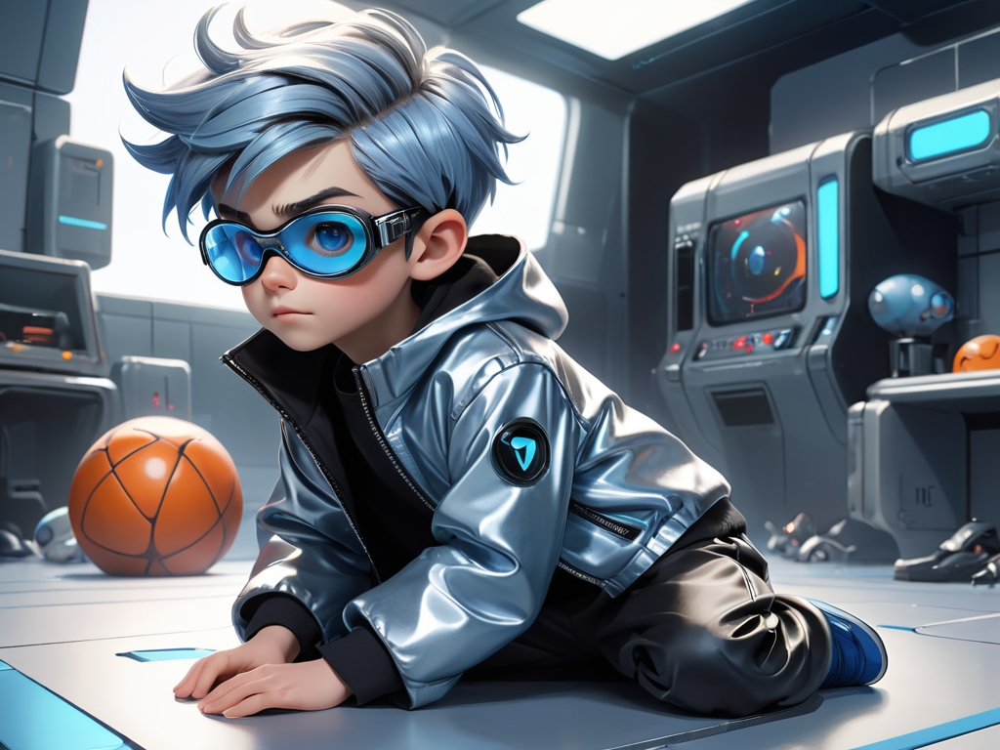
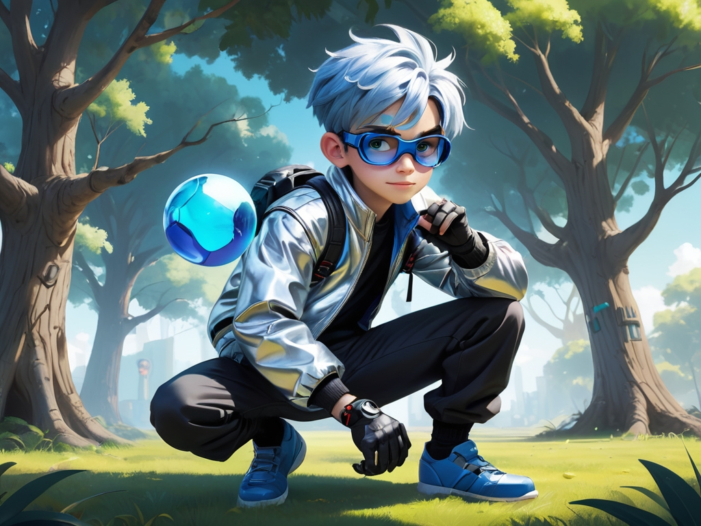
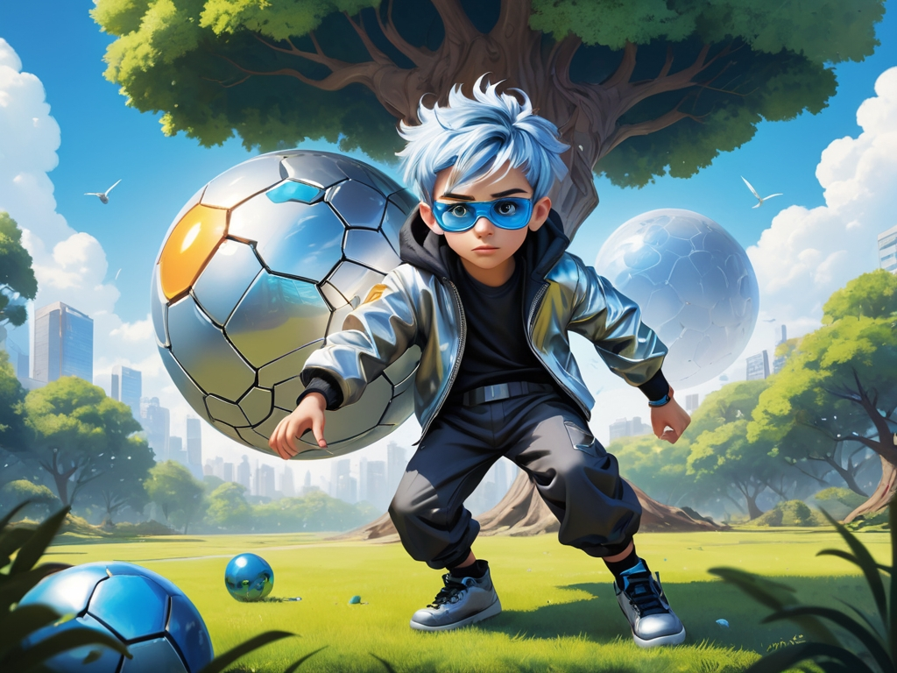
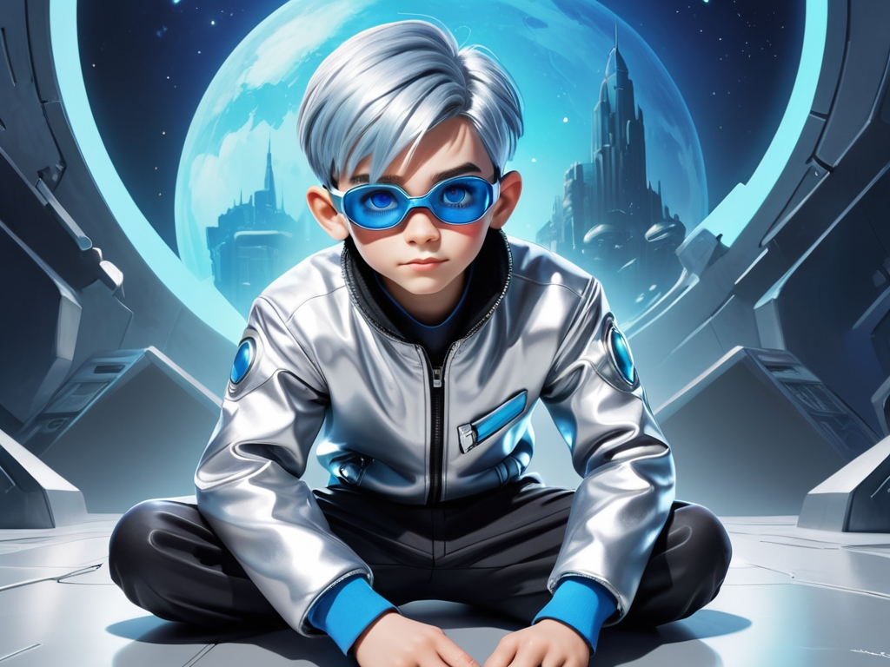
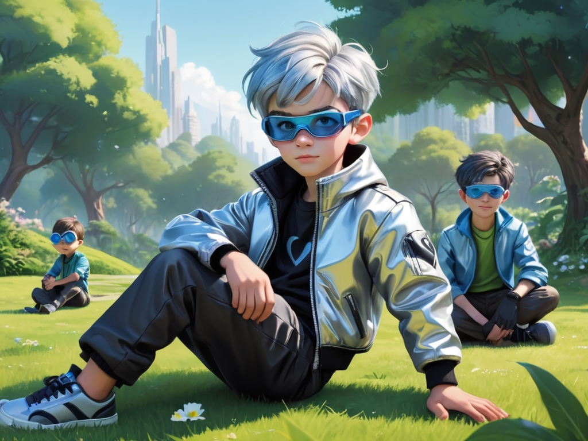
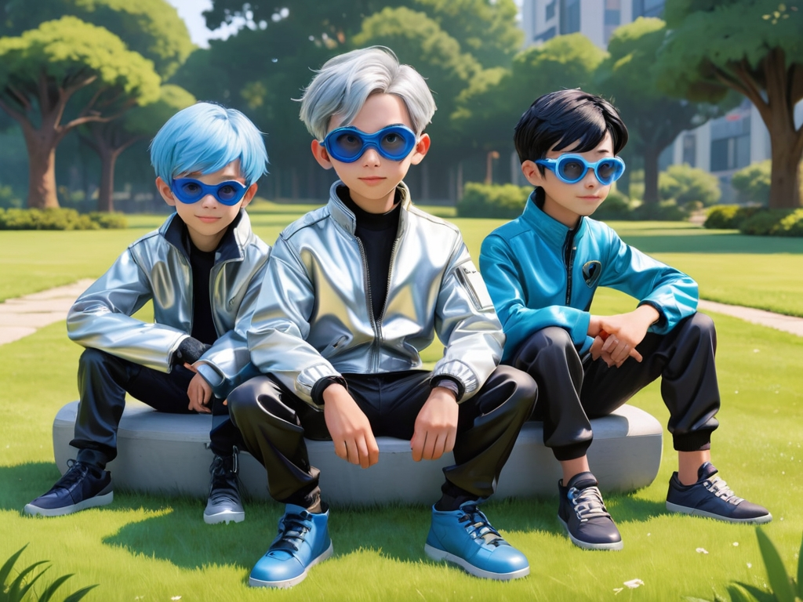

第1幕
Ryan在公園裡玩耍。他看到一群小朋友正在玩球，但他有點害羞，不敢加入。
第2幕
有一個小朋友走過來，微笑著對Ryan說：“來一起玩吧！”Ryan點點頭，但心裡還是有點緊張。
第3幕
Ryan接過球，開始學著傳給其他小朋友，但他還不太會傳球，球一直掉下來。
第4幕
一個小朋友溫柔地對Ryan說：“沒關係，我來幫你。”然後他教Ryan怎麼正確地傳球。
第5幕
Ryan學會了如何傳球，大家一起玩得開心，Ryan覺得越來越自信。
第6幕
突然，球滾到了樹下，大家都很困擾。Ryan決定站出來：“我來拿！”他走過去，輕輕地把球撿了回來。
第7幕
小朋友們都為Ryan鼓掌，並稱讚他勇敢和樂於幫助。
第8幕
Ryan感到很開心，他明白了合作和互相幫助的重要性。
第9幕
大家決定一起組成隊伍，玩一場比賽。Ryan發現，當大家一起努力時，遊戲變得更加有趣。
第10幕
最後，大家一起坐在草地上，分享彼此的故事，Ryan覺得自己交到了好多朋友，心裡暖暖的。
